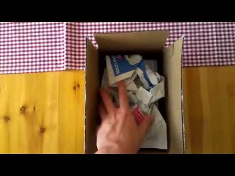

cc: Stefan Vorkoetter
Die Unsitte, sich über Dinge zu freuen und durch ein Auspackvideo zu dokumentieren, habe ich noch nie verstanden. Deshalb habe ich selbst ein Video gedreht, um zu prüfen, ob wenigstens das Erstellen des Videos Spaß macht.
Als Mathenerd packe ich natürlich einen Taschenrechner aus: den HP35s. Einen der wenigen Rechner auf dem Markt, der die Umgekehrt Polnische Notation unterstützt und zelebriert. Er ist eine Symbiose und perfekte Verbindung zwischen Mathematik und Programmierung, Nerdtum auf beiden Seiten und ein Prachtstück handwerklicher Ingenieurskunst. Ich übertreibe natürlich schamlos, aber das darf man in solchen Videos natürlich auch.